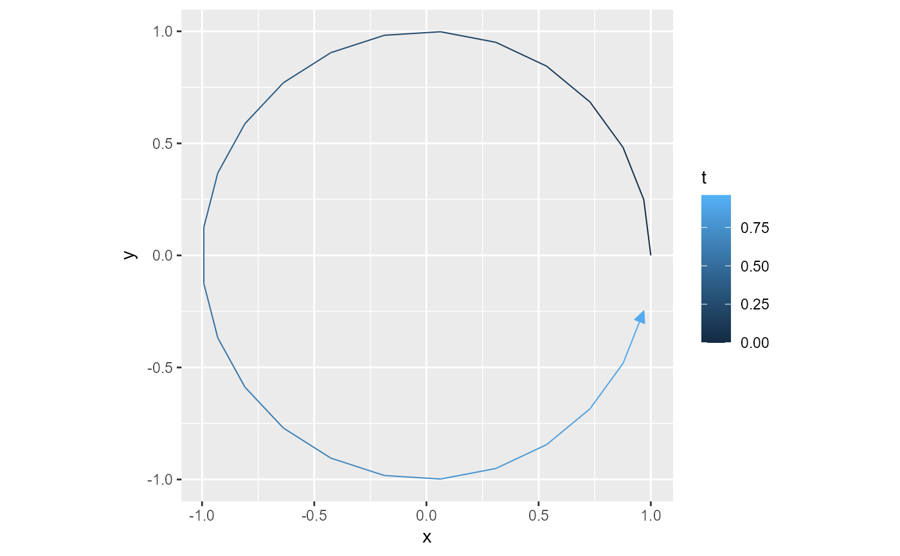

geom_stream() generates a ggplot2 layer that visualizes data as continuous
"streams" over a temporal variable t. Each stream is defined by x,
y, and t aesthetics, and optionally grouped by group. The data
points within each group are automatically ordered by t to form a
continuous streamline path.
Usage
geom_stream(
mapping = NULL,
data = NULL,
stat = StatStream,
position = "identity",
...,
na.rm = FALSE,
show.legend = NA,
inherit.aes = TRUE,
arrow = grid::arrow(angle = 25, length = unit(0.025, "npc"), type = "closed")
)
stat_stream(
mapping = NULL,
data = NULL,
geom = GeomStream,
position = "identity",
...,
na.rm = FALSE,
show.legend = NA,
inherit.aes = TRUE,
arrow = grid::arrow(angle = 25, length = unit(0.025, "npc"), type = "closed")
)
StatStream
GeomStreamFormat
An object of class StatStream (inherits from Stat, ggproto, gg) of length 4.
An object of class GeomStream (inherits from GeomPath, Geom, ggproto, gg) of length 5.
Arguments
- mapping
Set of aesthetic mappings created by
ggplot2::aes(). Required:x,y,t. Optional:group(if multiple streams). Ifidis provided, it will be mapped togroupautomatically.- data
A data frame or other object, as in
ggplot2::layer().- stat
The statistical transformation to use on the data for this layer. When using a
geom_*()function to construct a layer, thestatargument can be used the override the default coupling between geoms and stats. Thestatargument accepts the following:A
Statggproto subclass, for exampleStatCount.A string naming the stat. To give the stat as a string, strip the function name of the
stat_prefix. For example, to usestat_count(), give the stat as"count".For more information and other ways to specify the stat, see the layer stat documentation.
- position
A position adjustment to use on the data for this layer. This can be used in various ways, including to prevent overplotting and improving the display. The
positionargument accepts the following:The result of calling a position function, such as
position_jitter(). This method allows for passing extra arguments to the position.A string naming the position adjustment. To give the position as a string, strip the function name of the
position_prefix. For example, to useposition_jitter(), give the position as"jitter".For more information and other ways to specify the position, see the layer position documentation.
- ...
Other arguments passed to the respective
ggplot2::geom_path()or ggplot2::Stat for customization (e.g.,linetype,color,linewidth).- na.rm
If
FALSE(default), missing values are removed with a warning. IfTRUE, missing values are silently removed.- show.legend
Logical. Should this layer be included in the legends?
- inherit.aes
If
FALSE, overrides the default aesthetics rather than combining with them.- arrow
An optional
grid::arrow()specification to place arrowheads on the streamline (e.g., to indicate direction).- geom
The geometric object used to draw the streamline. Defaults to ggplot2::GeomPath in
geom_stream(), or GeomStream instat_stream().
Value
A ggplot2 layer that can be added to a plot to produce a streamline
visualization. Internally, this layer reorders data by t within each
group, then draws a continuous path.
Aesthetics
geom_stream() and stat_stream() understand the
following aesthetics (required aesthetics are in bold):
x: Typically the horizontal axis (often mapped to timet).y: The vertical axis (often magnitude or value at timet).t: A temporal or ordered variable used to sequence the data.group: Grouping for multiple streams (mapped fromidif present).color,linetype,linewidth,alpha, etc. (inherited from ggplot2::geom_path).
Details
Data Ordering: If
tis missing, an error is thrown. If present, points within each group are sorted bytbefore drawing.Stream vs. Stat:
geom_stream()is a convenient wrapper for typical usage; it setsstat = StatStreamand uses ggplot2::GeomPath by default.stat_stream()provides direct access to the reordering stat, using GeomStream for drawing. This is useful for advanced customization.
Arrows: Use the
arrowparameter to indicate direction on each streamline. For more details, see grid::arrow.
See also
ggplot2::geom_path for the underlying path geometry, and grid::arrow to customize arrowheads.
Examples
stream_1 <- data.frame(
x = c(0, 3),
y = c(0, 0),
t = 0:1
)
stream_2 <- data.frame(
x = c(1, 1),
y = c(1, 5),
t = 0:1
)
stream_3 <- data.frame(
x = c(2, 5),
y = c(2, 6),
t = 0:1
)
streams <- rbind(
cbind(stream_1, id = 1),
cbind(stream_2, id = 2),
cbind(stream_3, id = 3)
)
ggplot(streams) +
geom_stream(aes(x = x, y = y, t = t, group = id))
